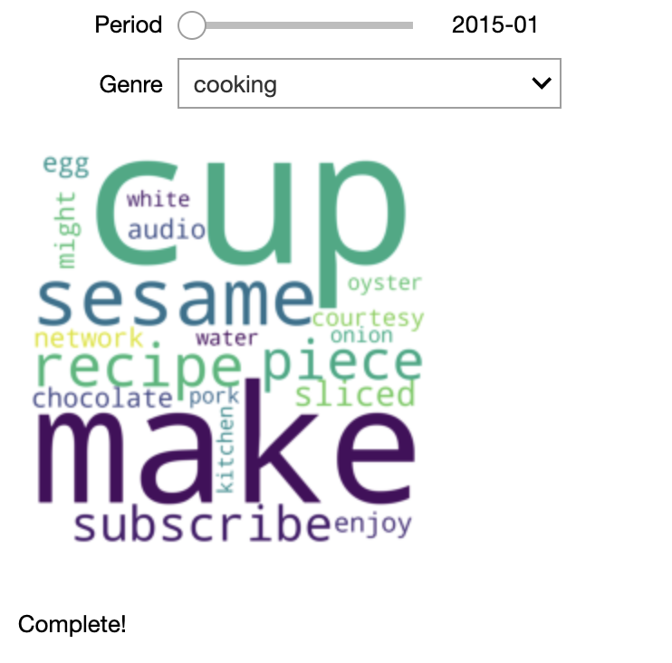
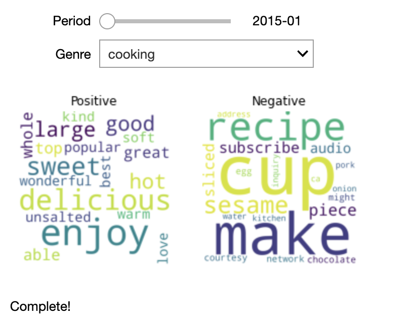
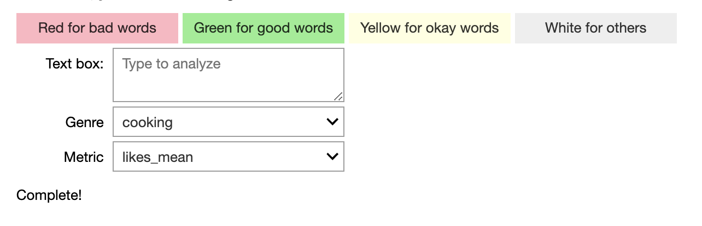

Welcome to ECE 229 Project 7’s documentation!¶
YOUTUBE CONTENT CREATOR DASHBOARDS¶
  {kind=link}
{kind=link}
{kind=link}
Intallation and Setup¶
This code was run using Python 3.6.6 and is configured for using the Chrome browser. Alternate configurations are not guaranteed to work.
The following pacakages are required for scraping data, analyzing the data, and displaying the results:
Webscraping
beautifulsoup4
selenium (Then download the driver and follow further instructions from here.)
requests
Analysis
textblob (Download the corpora after installing the package with
python -m textblob.download_corpora)statistics
Displaying Results
ipywidgets
wordcloud
matplotlib
Common to All
pickle
os
pandas
datetime
sys
time
numpy
User Guide¶
Running the code
Scraping
Make sure
scraping/users.txtis up to date with desired user list. Each line in the user list must be in the format “Genre type user”. ‘Genre’ is the family or type of user content (analysis is grouped by this genre!!), such as cooking or gaming. ‘Type’ can be ‘u’ for user, ‘p’ for playlist or ‘c’ for channel. ‘User’ is the username the content creator uploads to YouTube under.Run
scraping/run_get_video_linksto get links to 100+ videos for all the users inscraping/users.txt. This code creates one folder per genre indata/source_linksand in each genre-folder creates one text file per user.Run
scraping/run_get_video_datato get the meta data for each video link. The script automatically finds all folders and indata/source_linksand scrapes each video linked in the text files.
Sentiment Analysis
Make sure that all the scraped data is stored as a
.txtfile with the format<name>_dataFrame.txtin thedata/directory.Run
analysis_backend/generate_DFto process all such files simultaneously from a given directory (default:data/) and into a pickled dictionary of dataframes, each of which is indexed with a key described by the corresponding<name>. This program cleans the data, controls the duplicates and removes the garbage elements. It also looks at the distributions of their various attributes across a genre.Run
analysis_backend/analyze_textto analyze a given piece of text based on the dataframes generated usinggenerate_DFto produce a colour coded output as well as an overall score.
Visualisations
Install package
wordcloud.Make sure you have
data_combined.pinside thedatafolder.Open
front_end/front-end_Group7-Copy1.ipynband run the code. You will get the interactive output.
Testing the Code
Tests are designed to run from the top level of the directory (not from within the ‘test’ folder). There are seven tests and they should all pass provided the required packages and software are installed.